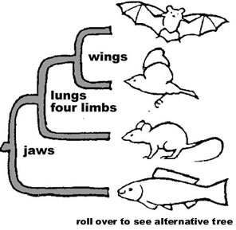
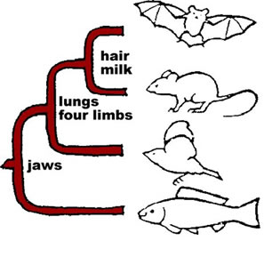

Well before the modern theory of evolution was proposed, it was obvious to naturalists, and particularly the Swedish naturalist Carl Linneaus (1707-1778), that various organisms could be classified into a hierarchical scheme (you may have heard of it: kingdoms, phyla, orders, families, etc).
In this scheme, each type of organism is given a unique place and a unique name. The most natural of these groups are “species”, which are defined by the fact that organisms that are of the same species can (and do) successfully interbreed with one another.
The concept of a species is complex, in large part because populations vary and evolve over time. The biological species concept was defined by Mayr.
Species are groups of actually (or potentially) interbreeding natural populations which are reproductively isolated from other such groups.” - Ernst Mayr (1953)
This definition is not completely unambiguous. For example, when, over the course of time does one species become distinct from its progenitor? How do you define a species when individuals do not interbreed.
A particularly interesting example is known as a ring species. Imagine populations of the species A; over the geographic range of A where there exist a number of subpopulations.
These subpopulations (A1 to A5) and (Aa to Ae) have limited regions of over-lap with one another, but where they overlap they interbreed successfully.
But, populations A5 and Ae no longer interbreed successfully – are these populations separate species?
Figure: Ring species. Click the image to learn more
Defining relationships between species morphologically:The linnean classification system suggests a tree-like organization to the relationships between organisms.
How do we arrange organisms on such a phylogenic tree?
One approach is known as cladistics. Each type of organism is analyzed in terms of primitive (ancestral) and derived (that is, more specialized) characteristics.
Based on these traits, organisms can be arranged into trees.
Of course, exactly how such a tree is structured depends upon which traits are considered to be primitive (and so present in ancestral forms) and which traits are considered to represent recent specializations.

The ability to determine the complete sequence of an organism’s DNA has made it possible to use other traits, DNA sequence and genome organization, to study the relationship of organisms with respect to one another.
In most cases this has confirmed anatomical based classification schemes, while in others it has revealed unexpected relationships.
Classification beyond species:
The next higher level of classification is “genus”. Organisms that are similar to one another, but clearly distinct, can be placed in the same genus. For example there are a number of species in the genus Homo [link], these include sapiens (modern people), floresiensis, habilis, and neanderthalensis.
Given their similarities, we assume that all members of a particular genus share a common ancestor in the relatively recent (millions to tens of millions of years) past.
As we look deeper at the anatomical and molecular structure of organisms, particularly their genomic DNA sequences, we find evidence for deeper relationships.
Humans, are grouped together with a number of living organisms (lemurs, lorises, tarsiers, new world monkeys, old world monkeys, and apes) and extinct species in the order of Primates [link].
The available evidence indicates that all primates shared a common ancestor that lived approximately 85 million years ago (that is about 20 million years before the dinosaurs went extinct!).
The primates are divided into two suborders, all members of one of these, the Haplorrhini, which includes tarsiers, monkeys, apes, and human beings share a requirement for vitamin C in their diet. This requirement is due to a mutation in a gene (known as GULO or 1-gulono-gamma-lactone oxidase). GULO1 is required for the synthesis of vitamin C. This mutation in the ancestor or the Haplorrhini appears to have occurred ~40 million years ago.
Putting a working copy of this gene, derived form a mouse, into human cells “cures” them of the need for exogenous vitamin C.
Guinea pigs also require vitamin C, but since i) there are primates, such as lemurs, that do not require vitamin C and ii) since the common ancestor of primates and guinea pigs lived more than 80 million years ago, it appears that the mutations that make Haplorrhini primates and guinea pigs vitamin C dependent occurred independently.
Now the deeper question is, why should it be possible to group organisms into such a hierarchical system. Why should we share traits, at both the anatomical and DNA sequence level with lemurs and tarsiers?
Such an ordering of organisms is difficult to understand if each organism originated independently - if each were created de novo.
On the other hand it makes complete sense if each modern organism evolved from an ancestor, and that that ancestor gave rise (over evolutionary time) to multiple species. The reason that organisms appear related is that they are, they share a common ancestor.
Here it is worth noting quite explicitly that while we are primates, no living primate is the ancestor to humans. What we share is a common ancestor that lived over 80 million years ago.
Phylogenetic trees are generally compared based on the principle of parsimony (Occam’s razor.)
This principle states that, all else being equal, the simplest model that explains the data is preferable to a more complex one. When two models produce the same predictions and explain the same set of data, we prefer the simpler of the two.
In the case of the relationships between organisms, evolutionary mechanisms provide the simplest, and most predictive explanation.
Questions to answer
Questions to ponder
Homologs and Analogs
A major problem in classifying organisms is deciding whether similar traits were inherited from a common ancestor or whether they represent independent solutions to a particular problem.
For example, an anatomical analysis of the forelimb of mammals suggests that they are homologous structures.
To say that two structures are homologous means that they are derived from a common ancestor and that the feature was present in that common ancestor.
This type of reasoning leads to the prediction that fossils of the last common ancestor of the mammals will be found to have a forelimb with a structure similar to that of modern mammals.
Not all similar structures are homologous, however. The alternative is that the structures are analogous. When two structures are analogous, it means that they evolved independently, but perform the same functions or have a similar structure.
Their common form was determined by their common function.
Consider the wing of a pterodactyl, a flying reptile, a bird, and a bat, a mammal.
Analysis of these structures indicates that they are distinctly different from one another.
In the pterodactyl, the wing membrane is supported by the 5th finger of the forelimb, in the bird by the 2nd finger, and in the bat, by the 3rd, 4th and 5th fingers.
The last common ancestor of flying reptiles,birds and mammals did not have wings, although it certainly had forelimbs.
While wings of pterodactyls, birds, and bats are analogous structures, their forelimbs are homologous.
The physics of flight are constant. Organisms of similar size face the same aerodynamic and thermodynamic constraints. In general there are only a limited number of physically workable solutions to deal with these constraints.
Under these conditions different populations will, through the process of variation and selection, end up with structurally similar solutions. This process is known as convergent evolution.
Convergent evolution occurs when only certain solutions to a particular problem are evolutionarily accessible. As another example, the use of a dagger is an effective solution to the problem of killing another organism.
Variations of this solution have been “discovered” or invented independently many times.
Marsupial and placental mammals diverged from a common ancestor approximately 160Myr ago.
Since then, they have converged on a number of similar adaptations.
The loss of traits
Another process that can confuse or complicate cladistic analysis is the loss of traits.
As organisms adapt to a specific environment and life style, traits once useful can become irrelevant and may be lost.
A classic example is the reduction of hind limbs during the evolution of whales.
Another common loss is that of eyes, often seen as populations adapt to environments in which light is absent. The loss of traits can itself be an adaptation if it provides an advantage to organisms living in a particular environment.
This fact can make it difficult to determine whether an organism is primitive (that is retains ancestral features) or is highly evolved.
Evidence for a common ancestor: Similar structures may arise independently, while apparently different structures, such as a human hand and a whale’s flipper, are related.
How do we distinguish between these two possibilities? In general, we carry out a detailed comparative analysis of the development and final form of the structure.
In the modern world of molecular biology, this involves the genes that are active as the structure forms.
The more details two structures share, the more likely they are to be homologous.
Detailed analysis of many different types of organisms reveals the presence of a common molecular signature that strongly suggests that all living organisms are closely related; that is, that they share a common ancestor.
What are these apparent universal homologies? They range from the basic structure of cells to the molecular machinery involved in energy capture and transduction, information storage and utilization.
To review (superficially), all extant organisms …
Questions to answer
Questions to ponder
{kind=link}